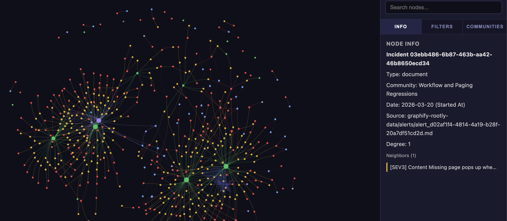
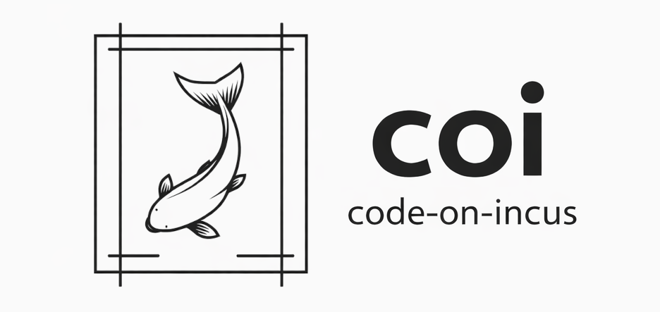
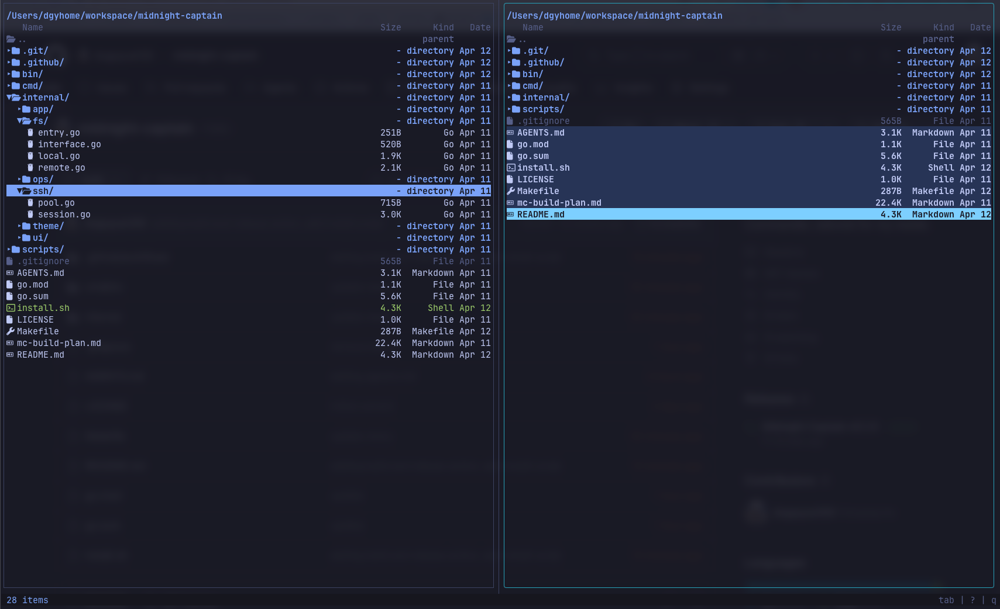

THE FRONT PAGE
EDITOR'S NOTE: As we trade the integrity of the build for the convenience of the patch, we find ourselves presiding over an era where the only thing more fragile than our infrastructure is our memory of how to build it properly. #The systemic decay of foundational engineering rigors in favor of automated expediency.
A new catalog attempts to map the sprawling, ad-hoc world of RAG and LLM memory systems—revealing how today’s ‘solutions’ often trade precision for scale, and how few teams bother to measure the decay rate of their own knowledge bases.
A former dancer paralyzed by ALS used a non-invasive EEG system to trigger generative motion-capture models in real time, raising questions about the fidelity of neural input as a creative medium—and whether the tech can scale beyond bespoke demos.
The shift from raw parameter scaling to structural efficiency suggests a move toward sustainable compute, though it risks further distancing developers from the underlying hardware abstractions. We are trading the brute force of the transformer for a more nuanced, albeit more opaque, optimization layer.
An individual leverages generative video to frame complex regional tensions through the disarming aesthetic of plastic building blocks, bypassing traditional editorial scrutiny. The tradeoff is a total collapse of visual friction, where the labor of physical stop-motion is replaced by a fluid, often hallucinated, simulation of reality.

Graphify attempts to salvage architectural insights from the messy debris of post-mortems by mapping incidents into queryable knowledge graphs. It trades the narrative nuance of human debriefs for a rigid, machine-readable logic that might finally expose the systemic ghosts in the machine.

As we hand the terminal over to LLMs, Code on Incus provides the necessary sandbox for untrusted code execution, though the added kernel-level complexity introduces its own maintenance burden. It is a sober attempt to reclaim system integrity in an era of increasingly unvetted, machine-generated pull requests.

A modern re-implementation of the classic dual-pane file management paradigm, trading the bloat of modern electron wrappers for the lean, keyboard-centric discipline of TUI systems. It risks being a mere nostalgic exercise unless it can bridge the gap between legacy workflows and today's fragmented cloud storage realities.